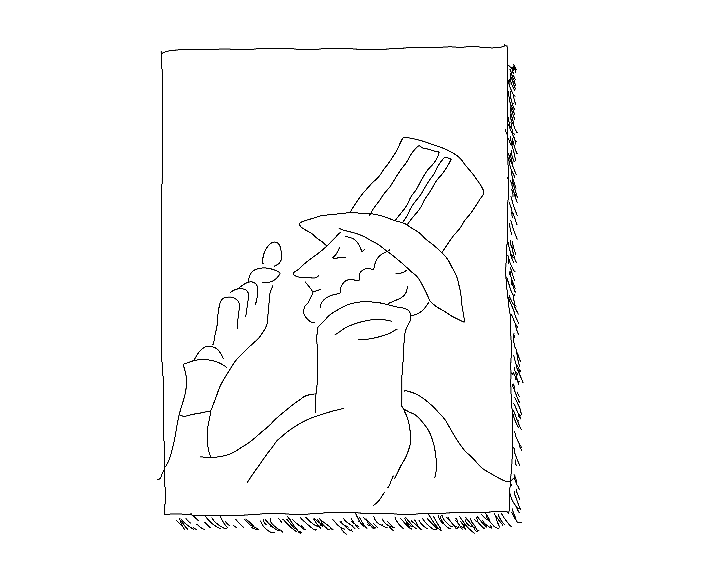
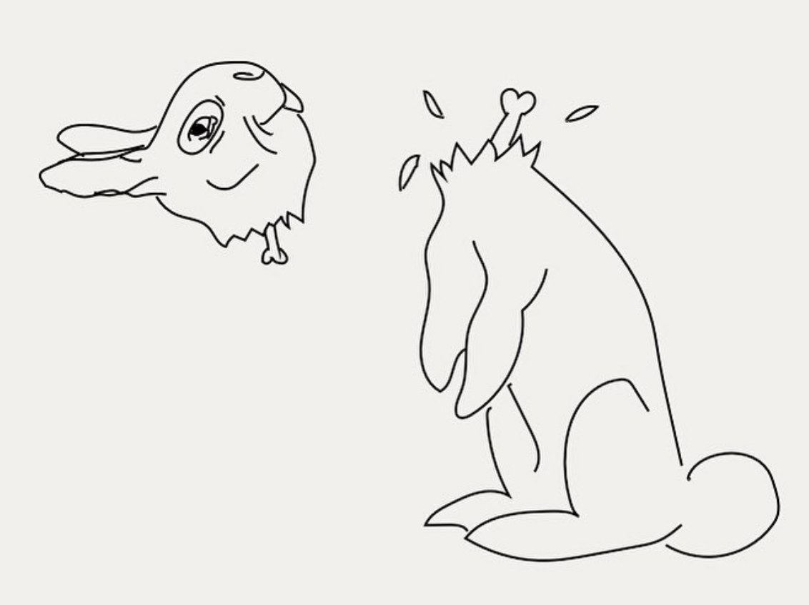

Adobe Residency application




The Illustrative Wikipedia
Hello, my name is Juweek Adolphe and I live in Brooklyn, NY. I am a 24 year old and I'm a big information guy. I pretty much think that everything in the world is amazing.
Sports, music, physics, politics; they all fascinate me and bring out my curiousity. My two favorite things would have to be art and technology. I love to draw, and I love to code, and I want to push the limit of what that means.
My project proposal is to create visual explanations on things, mixing my illustrations with digital techniques like Photoshop editing and coding to make a point. I'm a visual journalist at the Guardian, so I already do this on the daily. But my contract is up in March, and I want to use this opportunity to become more experimental in my work.
Over 75% of the world's population are visual learners, and studies show we listen differently when stories are told. With a year to self-explore, I can find new ways to merge media together in exciting ways. I can also shed new light on topics that many of us misunderstand.
I've already started to explore what that could be. Here's a draft of an story I wrote on the future of the cities. Here are two projects I made, one an interactive piece about food, the other a data visualization about Congress.
Adobe and the creative community of course need to be an important part of this. I'm relatively new to Illustrator, so I'll be sharing my journey of learning new techniques, such as using vector files, and drawing on the apps for the iPad . I'll share regular updates of my work via Twitter, Behance, and Instagram. And I'll probably tweet a lot.
The timeline would be based on my experience in the newsroom now.
Since I was a young kid, I loved learning about the world through stories. Now I'm a stroyteller full-time, and I want to tell the best stories that I can.
And here are examples of my illustration style. They are all stroke based, and have a little animation or two to make them really pop out.